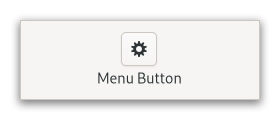

Gtk.MenuButton¶
Example¶
- Subclasses:
None
Methods¶
- Inherited:
Gtk.Widget (181), GObject.Object (37), Gtk.Accessible (16), Gtk.Buildable (1)
- Structs:
class |
|
|
|
|
|
|
|
|
|
|
|
|
|
|
|
|
|
|
|
|
|
|
|
|
|
|
|
|
|
|
|
|
|
|
|
|
|
|
|
|
Virtual Methods¶
- Inherited:
Gtk.Widget (25), GObject.Object (7), Gtk.Accessible (6), Gtk.Buildable (9)
Properties¶
- Inherited:
Name |
Type |
Flags |
Short Description |
|---|---|---|---|
r/w/en |
|||
r/w/en |
|||
r/w/en |
|||
r/w/en |
|||
r/w/en |
|||
r/w/en |
|||
r/w/en |
|||
r/w/en |
|||
r/w |
|||
r/w |
|||
r/w/en |
|||
r/w/en |
Signals¶
- Inherited:
Name |
Short Description |
|---|---|
Emitted to when the menu button is activated. |
Fields¶
- Inherited:
Class Details¶
- class Gtk.MenuButton(**kwargs)¶
- Bases:
- Abstract:
No
The
GtkMenuButtonwidget is used to display a popup when clicked.An example
Gtk.MenuButtonThis popup can be provided either as a
GtkPopoveror as an abstractGMenuModel.The
GtkMenuButtonwidget can show either an icon (set with the [property`Gtk`.MenuButton:icon-name] property) or a label (set with the [property`Gtk`.MenuButton:label] property). If neither is explicitly set, a [class`Gtk`.Image] is automatically created, using an arrow image oriented according to [property`Gtk`.MenuButton:direction] or the generic “open-menu-symbolic” icon if the direction is not set.The positioning of the popup is determined by the [property`Gtk`.MenuButton:direction] property of the menu button.
For menus, the [property`Gtk`.Widget:halign] and [property`Gtk`.Widget:valign] properties of the menu are also taken into account. For example, when the direction is
Gtk.ArrowType.DOWNand the horizontal alignment isGtk.Align.START, the menu will be positioned below the button, with the starting edge (depending on the text direction) of the menu aligned with the starting edge of the button. If there is not enough space below the button, the menu is popped up above the button instead. If the alignment would move part of the menu offscreen, it is “pushed in”.| start | center | end |- | — | — | — |**down** | | | |**up** | | | |**left** | | | |**right** | | | |- CSS nodes
`` menubutton ╰── button.toggle
- ╰── <content>
╰── [arrow]
GtkMenuButtonhas a single CSS node with namemenubuttonwhich contains abuttonnode with a.togglestyle class.If the button contains an icon, it will have the
.image-buttonstyle class, if it contains text, it will have.text-buttonstyle class. If an arrow is visible in addition to an icon, text or a custom child, it will also have.arrow-buttonstyle class.Inside the toggle button content, there is an
arrownode for the indicator, which will carry one of the.none,.up,.down,.leftor.rightstyle classes to indicate the direction that the menu will appear in. The CSS is expected to provide a suitable image for each of these cases using the-gtk-icon-sourceproperty.Optionally, the
menubuttonnode can carry the.circularstyle class to request a round appearance.- Accessibility
GtkMenuButtonuses theGtk.AccessibleRole.BUTTONrole.- classmethod new()[source]¶
- Returns:
The newly created
GtkMenuButton- Return type:
Creates a new
GtkMenuButtonwidget with downwards-pointing arrow as the only child.You can replace the child widget with another
GtkWidgetshould you wish to.
- get_always_show_arrow()[source]¶
- Returns:
whether to show a dropdown arrow even when using an icon or a custom child.
- Return type:
Gets whether to show a dropdown arrow even when using an icon or a custom child.
New in version 4.4.
- get_can_shrink()[source]¶
- Returns:
true if the button can shrink, and false otherwise
- Return type:
Retrieves whether the button can be smaller than the natural size of its contents.
New in version 4.12.
- get_child()[source]¶
- Returns:
the child widget of self
- Return type:
Gtk.WidgetorNone
Gets the child widget of self.
New in version 4.6.
- get_direction()[source]¶
- Returns:
a
GtkArrowTypevalue- Return type:
Returns the direction the popup will be pointing at when popped up.
- get_menu_model()[source]¶
- Returns:
a
GMenuModel- Return type:
Returns the
GMenuModelused to generate the popup.
- get_popover()[source]¶
- Returns:
a
GtkPopoverorNone- Return type:
Gtk.PopoverorNone
Returns the
GtkPopoverthat pops out of the button.If the button is not using a
GtkPopover, this function returnsNone.
- get_use_underline()[source]¶
- Returns:
Truewhether an embedded underline in the text indicates the mnemonic accelerator keys.- Return type:
Returns whether an embedded underline in the text indicates a mnemonic.
- set_active(active)[source]¶
- Parameters:
active (
bool) – whether the menu button is active
Sets whether the menu button is active.
New in version 4.10.
- set_always_show_arrow(always_show_arrow)[source]¶
- Parameters:
always_show_arrow (
bool) – whether to show a dropdown arrow even when using an icon or a custom child
Sets whether to show a dropdown arrow even when using an icon or a custom child.
New in version 4.4.
- set_can_shrink(can_shrink)[source]¶
- Parameters:
can_shrink (
bool) – whether the button can shrink
Sets whether the button size can be smaller than the natural size of its contents.
For text buttons, setting can_shrink to true will ellipsize the label.
For icon buttons, this function has no effect.
New in version 4.12.
- set_child(child)[source]¶
- Parameters:
child (
Gtk.WidgetorNone) – the child widget
Sets the child widget of self.
Setting a child resets [property`Gtk`.MenuButton:label] and [property`Gtk`.MenuButton:icon-name].
If [property`Gtk`.MenuButton:always-show-arrow] is set to
TRUEand [property`Gtk`.MenuButton:direction] is notGTK_ARROW_NONE, a dropdown arrow will be shown next to the child.New in version 4.6.
- set_create_popup_func(func, *user_data)[source]¶
- Parameters:
func (
Gtk.MenuButtonCreatePopupFuncorNone) – function to call when a popup is about to be shown, but none has been provided via other means, orNoneto reset to default behavior
Sets func to be called when a popup is about to be shown.
func should use one of
[method`Gtk`.MenuButton.set_popover]
[method`Gtk`.MenuButton.set_menu_model]
to set a popup for self. If func is non-
None, self will always be sensitive.Using this function will not reset the menu widget attached to self. Instead, this can be done manually in func.
- set_direction(direction)[source]¶
- Parameters:
direction (
Gtk.ArrowType) – aGtkArrowType
Sets the direction in which the popup will be popped up.
If the button is automatically populated with an arrow icon, its direction will be changed to match.
If the does not fit in the available space in the given direction, GTK will its best to keep it inside the screen and fully visible.
If you pass
Gtk.ArrowType.NONEfor a direction, the popup will behave as if you passedGtk.ArrowType.DOWN(although you won’t see any arrows).
- set_has_frame(has_frame)[source]¶
- Parameters:
has_frame (
bool) – whether the button should have a visible frame
Sets the style of the button.
- set_icon_name(icon_name)[source]¶
- Parameters:
icon_name (
str) – the icon name
Sets the name of an icon to show inside the menu button.
Setting icon name resets [property`Gtk`.MenuButton:label] and [property`Gtk`.MenuButton:child].
If [property`Gtk`.MenuButton:always-show-arrow] is set to
TRUEand [property`Gtk`.MenuButton:direction] is notGTK_ARROW_NONE, a dropdown arrow will be shown next to the icon.
- set_label(label)[source]¶
- Parameters:
label (
str) – the label
Sets the label to show inside the menu button.
Setting a label resets [property`Gtk`.MenuButton:icon-name] and [property`Gtk`.MenuButton:child].
If [property`Gtk`.MenuButton:direction] is not
GTK_ARROW_NONE, a dropdown arrow will be shown next to the label.
- set_menu_model(menu_model)[source]¶
- Parameters:
menu_model (
Gio.MenuModelorNone) – aGMenuModel, orNoneto unset and disable the button
Sets the
GMenuModelfrom which the popup will be constructed.If menu_model is
None, the button is disabled.A [class`Gtk`.Popover] will be created from the menu model with [ctor`Gtk`.PopoverMenu.new_from_model]. Actions will be connected as documented for this function.
If [property`Gtk`.MenuButton:popover] is already set, it will be dissociated from the self, and the property is set to
None.
- set_popover(popover)[source]¶
- Parameters:
popover (
Gtk.WidgetorNone) – aGtkPopover, orNoneto unset and disable the button
Sets the
GtkPopoverthat will be popped up when the self is clicked.If popover is
None, the button is disabled.If [property`Gtk`.MenuButton:menu-model] is set, the menu model is dissociated from the self, and the property is set to
None.
Signal Details¶
- Gtk.MenuButton.signals.activate(menu_button)¶
- Signal Name:
activate- Flags:
- Parameters:
menu_button (
Gtk.MenuButton) – The object which received the signal
Emitted to when the menu button is activated.
The
::activatesignal onGtkMenuButtonis an action signal and emitting it causes the button to pop up its menu.New in version 4.4.
Property Details¶
- Gtk.MenuButton.props.active¶
- Name:
active- Type:
- Default Value:
- Flags:
Whether the menu button is active.
New in version 4.10.
- Gtk.MenuButton.props.always_show_arrow¶
- Name:
always-show-arrow- Type:
- Default Value:
- Flags:
Whether to show a dropdown arrow even when using an icon or a custom child.
New in version 4.4.
- Gtk.MenuButton.props.can_shrink¶
- Name:
can-shrink- Type:
- Default Value:
- Flags:
Whether the size of the button can be made smaller than the natural size of its contents.
New in version 4.12.
- Gtk.MenuButton.props.child¶
- Name:
child- Type:
- Default Value:
- Flags:
The child widget.
New in version 4.6.
- Gtk.MenuButton.props.direction¶
- Name:
direction- Type:
- Default Value:
- Flags:
The
GtkArrowTyperepresenting the direction in which the menu or popover will be popped out.
- Gtk.MenuButton.props.has_frame¶
- Name:
has-frame- Type:
- Default Value:
- Flags:
Whether the button has a frame.
- Gtk.MenuButton.props.icon_name¶
- Name:
icon-name- Type:
- Default Value:
- Flags:
The name of the icon used to automatically populate the button.
- Gtk.MenuButton.props.label¶
- Name:
label- Type:
- Default Value:
- Flags:
The label for the button.
- Gtk.MenuButton.props.menu_model¶
- Name:
menu-model- Type:
- Default Value:
- Flags:
The
GMenuModelfrom which the popup will be created.See [method`Gtk`.MenuButton.set_menu_model] for the interaction with the [property`Gtk`.MenuButton:popover] property.
- Gtk.MenuButton.props.popover¶
- Name:
popover- Type:
- Default Value:
- Flags:
The
GtkPopoverthat will be popped up when the button is clicked.
- Gtk.MenuButton.props.primary¶
- Name:
primary- Type:
- Default Value:
- Flags:
Whether the menu button acts as a primary menu.
Primary menus can be opened using the <kbd>F10</kbd> key
New in version 4.4.